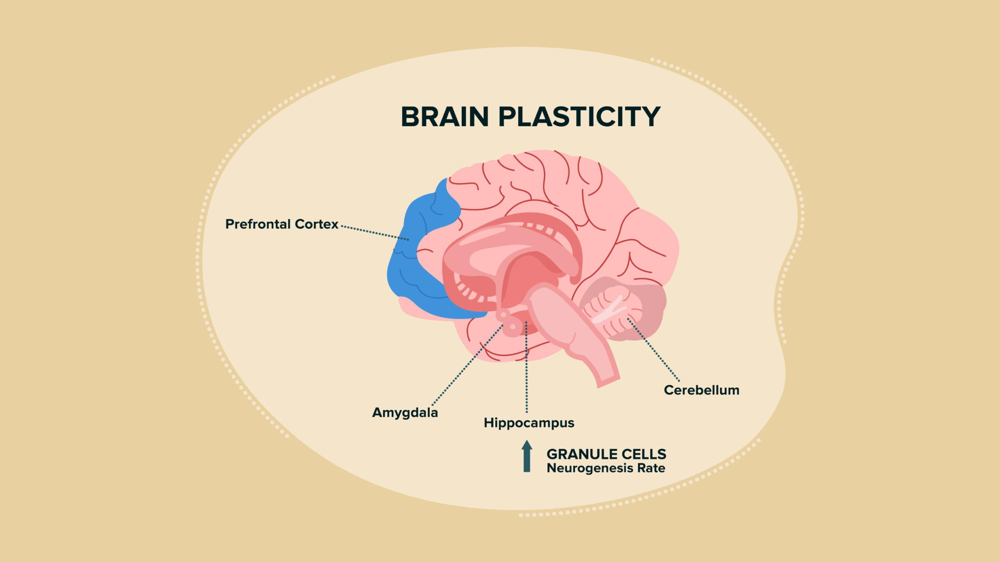

Điều gì tạo nên con người bạn?
Bạn có thực sự là một người cố định?
Tính cách và bản sắc cá nhân là những yếu tố quan trọng tạo nên sự khác biệt giữa mỗi người.
Có người hướng nội, có người hướng ngoại. Có người thích sự ổn định, trong khi những người khác luôn tìm kiếm trải nghiệm mới.
Nhưng những đặc điểm này có phải là bất biến?
Khoa học cho thấy tính cách có thể chịu ảnh hưởng từ di truyền, môi trường, giáo dục và trải nghiệm sống. Một số đặc điểm tương đối ổn định, nhưng những khía cạnh khác có thể thay đổi theo thời gian.
Bộ não có khả năng thay đổi
Tính dẻo thần kinh (Neuroplasticity) là khả năng của bộ não điều chỉnh các kết nối thần kinh để đáp ứng với quá trình học tập và trải nghiệm.
Khi bạn học một kỹ năng mới, luyện tập thường xuyên hoặc thích nghi với môi trường mới, bộ não có thể thay đổi theo những cách nhất định.
Điều này giúp giải thích tại sao con người có thể học hỏi và phát triển trong suốt cuộc đời.
Ký ức và bản sắc cá nhân
Những trải nghiệm trong quá khứ góp phần hình thành cách chúng ta nhìn nhận bản thân.
Tuy nhiên, ký ức không phải lúc nào cũng hoàn toàn chính xác. Cảm xúc và niềm tin hiện tại có thể ảnh hưởng đến cách chúng ta nhớ lại những sự kiện đã xảy ra.
Vì vậy, câu chuyện mà chúng ta kể về chính mình có thể thay đổi theo thời gian.
Bạn là một câu chuyện vẫn đang được viết tiếp
Bạn không chỉ là người đã trải qua những gì trong quá khứ. Bạn còn là người đang học hỏi, phát triển và tạo ra những trải nghiệm mới.
Hiểu bản thân không có nghĩa là tìm ra một định nghĩa cố định về con người mình. Đó là quá trình liên tục khám phá và trưởng thành.
Hãy nhớ rằng: Bạn không nhất thiết phải mãi là phiên bản của chính mình trong quá khứ.
